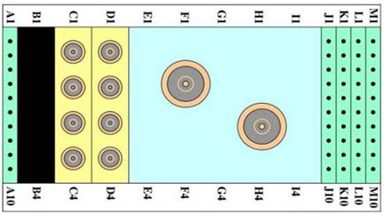

Operating Documentation
Direction 5440001-3, Rev# 6
Signa HDxt Service Methods
Module Version 1.0, Version Date 7/11/08
Operating Documentation |
| Required Persons | Procedure Timing |
| 1 | 60 minutes |
The following tips can be used to troubleshoot common problems with the 3.0T HD 8CH Foot Ankle Coil by Invivo, catalog M3340CB.
Digital Volt Meter, Qty. 1
The HD Foot Ankle coil configuration name must be installed to run this tool.
Problem: You are unable to pre-scan or are scanning without receiving a signal.
Possible Solution:
Ensure that you have selected the appropriate system coil selection. Refer to the Operator's Manual for additional information.
Ensure the green light above Port A is illuminated. This indicates the coil is properly plugged into the system.
Ensure that the landmark is correct and that the cradle has not unlatched.
Perform a continuity check on the external cable. The continuity check must be performed by a GE authorized Service Engineer.
Ensure that the coil is positioned with the cable exiting towards the bore and that the system and coil polarity match.
If you still cannot get a signal, try to scan (transmit and receive) with the body coil. For this test, be sure to remove the imaging coil from the magnet bore before you scan with the body coil. If you still receive no signal, the problem probably lies with your MR system. If the scan completes successfully, there is probably a problem with the Invivo coil. Contact GE for further assistance. If you are unable to scan with the substitute coil, there may be a system problem related to this particular coil type.
Problem: Image quality is not what you expect it to be given the parameters selected.
Possible Solution:
Review the selected protocol. If you are performing the Periodic Quality Assurance, be sure your protocol is identical to the protocol provided in your System Recommended Protocols. If you are performing diagnostic images, you may need to increase NEX or FOV.
Perform a continuity check on the external cable. The continuity check must be performed by a GE authorized Service Engineer.
Ensure that there are no loops in the cables.
Ensure that there no metal or ferromagnetic objects closet to the coil, patient, or magnet (i.e., safety pin, hair pin).
Ensure that the coil is properly positioned.
Ensure that your center frequency is within the frequency adjustment range for your system.
Ensure that the R1, R2, and TG values from the pre-scan are within the normal expected ranges.
Cleaning the electrical contacts that connect the upper and lower halves with Isopropyl Alcohol and a cotton swab has been demonstrated to improve the coil’s SNR on occasion. If you have not done so already, perform a MCQA (Multi Coil Quality Assurance) Test. If the values you obtain do not fall within normal operating parameters, investigate this further by performing a phantom scan with the body coil. For this test, be sure to remove the imaging coil from the magnet bore before you scan with the body coil. If you still have the same problems, there is probably an MR system problem. If the body coil scan is satisfactory, acquire a scan using both another coil of the same type plugged into the same system port (port A). If the image quality is visibly improved, there may be a problem with the Invivo coil. Contact GE for further assistance. If the image quality still suffers, there may be a system problem related to imaging with this type of coil.
Problem: There is a black line or signal void on the image.
Possible Solution: Ensure that there is no metal present in the area being scanned in or on the patient.
Problem: Some or all of the images appear shaded or exhibit uneven signal or banding.
Possible Solution: Confirm that no metallic objects are located nearby or outside of the FOV. This is especially important on images utilizing fat saturation.
Problem: The system will not recognize the coil or scan with the coil attached.
Possible Solution: Perform the continuity check.
The center pins of the System Connector receive coaxial connectors are fragile. Do not attempt to make any measurements at these center pins.
| NOTE: | With the coil cable disconnected, use a multimeter to assure an open circuit condition exists between the designated pin and GND for each signal channel as shown in |
Table 1: Coil Cable Connector Short Circuit and Open Circuit Check
| Signal Channel | Coil Cable Connector Pin (see Illustration 1) | System Connector (see Illustration 2) |
| RF 1 | A17 | C1 |
| RF 2 | A15 | C2 |
| RF 3 | A10 | C3 |
| RF 4 | A21 | C4 |
| RF 5 | A4 | D1 |
| RF 6 | A8 | D2 |
| RF 7 | B12 | D3 |
| RF 8 | A13 | D4 |
| GND | The following pins are common to GND: A2, A3, A5, A7, A9, A11, A12, A14, A16, A19, A20, A22, A23, B1, B3-B6, B8-B11, B20, B21, B23, and B24. | K1-K8, M6, MC Shield |
Illustration 1: Coil Cable Connector

If one or more of the readings indicate a short, replace the cable. If all of the above readings indicate an open circuit condition, proceed to the PIN Diode Control Channels Check.
With the coil cable disconnected, use a multimeter to determine continuity between the designated pins for each signal channel below. Also, ensure that the control pins are not shorted to the GND.
Table 2: Coil Cable Connector Continuity Check
| Signal Channel | Coil Cable Connector (see Illustration 1) | System Connector (see Illustration 2) |
| MC Bias 1 | A18 | J1 |
| MC Bias 2 | B22 | J2 |
| MC Bias 3 | B2 | J3 |
| MC Bias 4 | B19 | J4 |
| MC Bias 5 | A6 | J5 |
| MC Bias 6 | B7 | J6 |
| MC Bias 7 | A1 | J7 |
| MC Bias 8 | A24 | J8 |
| GND | The following pins are common to GND: A2, A3, A5, A7, A9, A11, A12, A1, A16, A19, A20, A22, A23, B1, B3-B6, B8-B11, B20, B21, B23, and B24. | K1-K8, M6, MC Shield |
Illustration 2: System Connector

If one or more of the readings are greater than 3 ohms, replace the coil cable. If all the reading are less than 3 ohms, proceed to the PIN Diodes Check.
With the coil cable connected to the coil, use a mulimeter to measure the diode drop across the coil connector pins as detailed below. See Illustration 2 for pin identification while performing this procedure.
Table 3: Pin Diode Expected Readings
| System Connector | Reading (V) | |||
| Positive Lead | Negative Lead | |||
| J1 | GND | [MC Shield] | 1.2 ± 0.2 | |
| GND | [G1] | J1 | Open | |
| J2 | GND | [MC Shield] | 1.2 ± 0.2 | |
| GND | [G2] | J2 | Open | |
| J3 | GND | [MC Shield] | 1.2 ± 0.2 | |
| GND | [G3] | J3 | Open | |
| J4 | GND | [MC Shield] | 1.8 ± 0.3 | |
| GND | [G4] | J4 | Open | |
| J5 | GND | [MC Shield] | 1.2 ± 0.2 | |
| GND | [G5] | J5 | Open | |
| J6 | GND | [MC Shield] | 1.2 ± 0.2 | |
| GND | [G6] | J6 | Open | |
| J7 | GND | [MC Shield] | 2.4 ± 0.2 | |
| GND | [G7] | J7 | Open | |
| J8 | GND | [MC Shield] | See details* | |
| GND | [G8] | J8 | See details* | |
For the J1 to J7 pins check, if one or more of the reading values are not in the range of the voltage tolerances above, then replace the coil and cable.
For the J8 and GND, if the ohm check had a reading as an open or If the diode check had a reading value of less than 3.0V, then replace the coil and cable.
If all of the above readings are correct, redo the Coil Imaging Performance Verification. If the problem still exists, replace the 3.0T HD 8CH Foot/Ankle Coil.
*Details
For the J8 and GND pins, sometimes the DMM can only handle so much voltage. (Typically, the DMM diode voltage rating is 3.0V). When the total diode drops are more than 3.0V, the DMM reads as an open. If your DMM can handle more than 3.0V, the expected reading should be 3.6V. If you DMM cannot handle more than 3.0V, conduct the pin diode check (see Section 5.4.4).
| NOTE: | Check to see your DMM specifications for Diode voltage rating range. |
Conduct an ohm check. Measure the resistance across the pin J8 and GND which should be read 1.9 ±0.2 MΩ. See Table 4.
| NOTE: | This validates that the diode is not open. |
Conduct a diode check. Measure the pin diode check across the pin J8 and GND which should be read as an open (0 V). See Table 5.
| NOTE: | This validates that the diode is not short. |
Table 4: Pin Diode Expected Readings (Only J8 Pin)
| System Connector | Reading (Ω) | |||
| Positive Lead | Negative Lead | |||
| J8 | GND | [MC Shield] | 1.9 ± 0.2 MΩ | |
Table 5: Pin Diode Expected Readings (Only J8 Pin)
| System Connector | Reading (Ω) | |||
| Postive Lead | Negative Lead | |||
| J8 | GND | [MC Shield] | Open | |
| GND | [G8] | J8 | Open | |
Inspect the coil for visible signs of wear. If the coil housings will not seat with each other or if the latch mechanism will not work properly, contact Service.